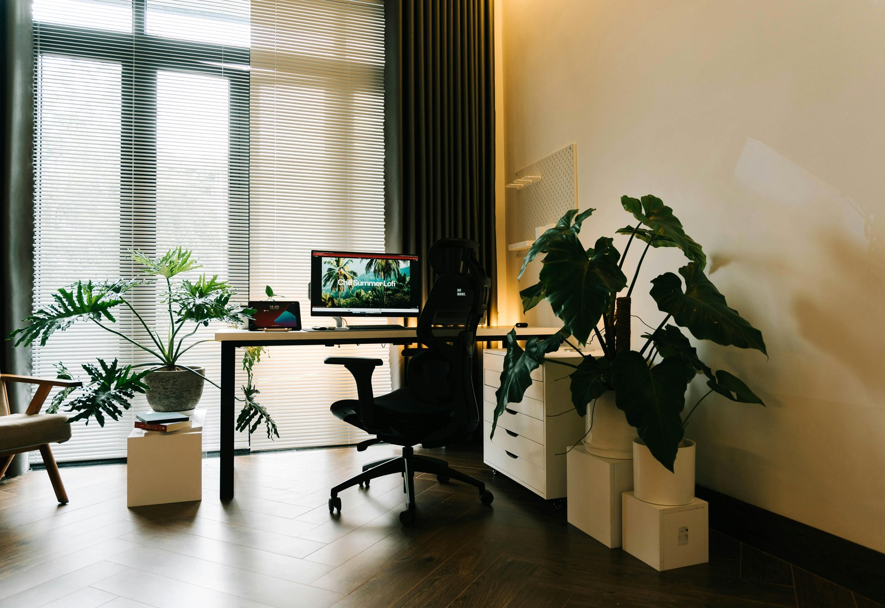
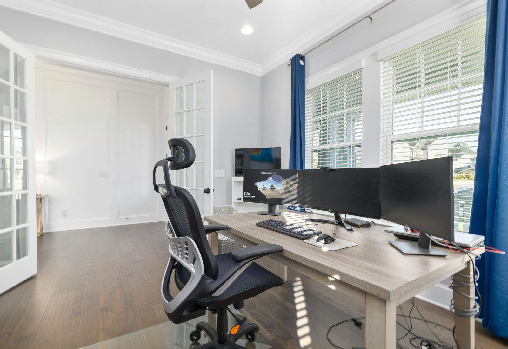

Integrated planning
WordPress
讓內容更新與後台管理回到品牌自己手上。
服務頁、文章、案例與資訊更新，都能用更穩定的管理流程持續維護。
App
把功能延伸成更直接的行動使用體驗。
會員、預約、通知或流程延伸需求，都能從 Web 再接到 App 端。SEO
讓網站不只是上線，還能持續被找到。
從搜尋曝光、內容結構到成效追蹤，把成長放進日常優化節奏裡。
Cloud hosting
把部署、備份與維運也一起整理進服務裡。
網站上線後的穩定性、監控、備份與效能維護，都放在同一個窗口處理。How we work
先釐清你需要的是網站、WordPress、App 還是 SEO／主機整合。

Working style
一個窗口，處理建置、優化與維運。
讓專案從第一版上線到後續成長，都更穩、更容易延伸。
